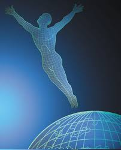

La Trame
Article extrait du site la-trame.comLa technique de la Trame se décompose en une séquence de 16 gestes codifiés par Patrick Burensteinas, réalisés par un praticien diplômé.
Son but est de permettre une meilleure circulation de l'information au sein du corps. En effet, certains vécus, tels des émotions non exprimées, créent des perturbations sur notre Trame, comme le ferait un caillou sur un tapis que l'on voudrait secouer.
La séquence vise à retirer ces obstacles, et à rétablir la circulation fluide et harmonieuse de l'énergie.
La Trame s'adresse à toute personne désireuse d'améliorer son bien-être. Elle peut être employée ponctuellement, pour résoudre un problème particulier ou de façon plus régulière, dans une démarche de développement personnel. La Trame est une technique créée en 1990 par Patrick Burensteinas. Ses études lui ont permis de mettre au point cette technique vibratoire permettant d'agir sur la circulation d'énergie dans notre organisme.
Patrick Burensteinas est parti d'une interrogation : pourquoi toutes les cellules de notre corps restent-elles à leur place et assurent-elles les fonctions qui leur sont normalement attribuées ?
Il a pu mettre en évidence qu'au même titre qu'un plan est nécessaire à un architecte pour réaliser une construction solide, un plan d'information est nécessaire au bon fonctionnement de notre organisme. La Trame est le nom donné par Patrick Burensteinas à ce schéma de cohérence de notre corps qui indique à chacun de ses composants - de la cellule à l'organe - sa place et son rôle. La circulation de l'information sur ce canevas, bien qu'invisible, permet la cohabitation et la coopération de toutes les cellules, ce afin de vivre et de faire vivre la communauté constituée par les différents éléments de notre organisme. Toute perturbation de cette circulation d'information dans le corps entraînera des désordres responsables de mal-être physique ou psychique.